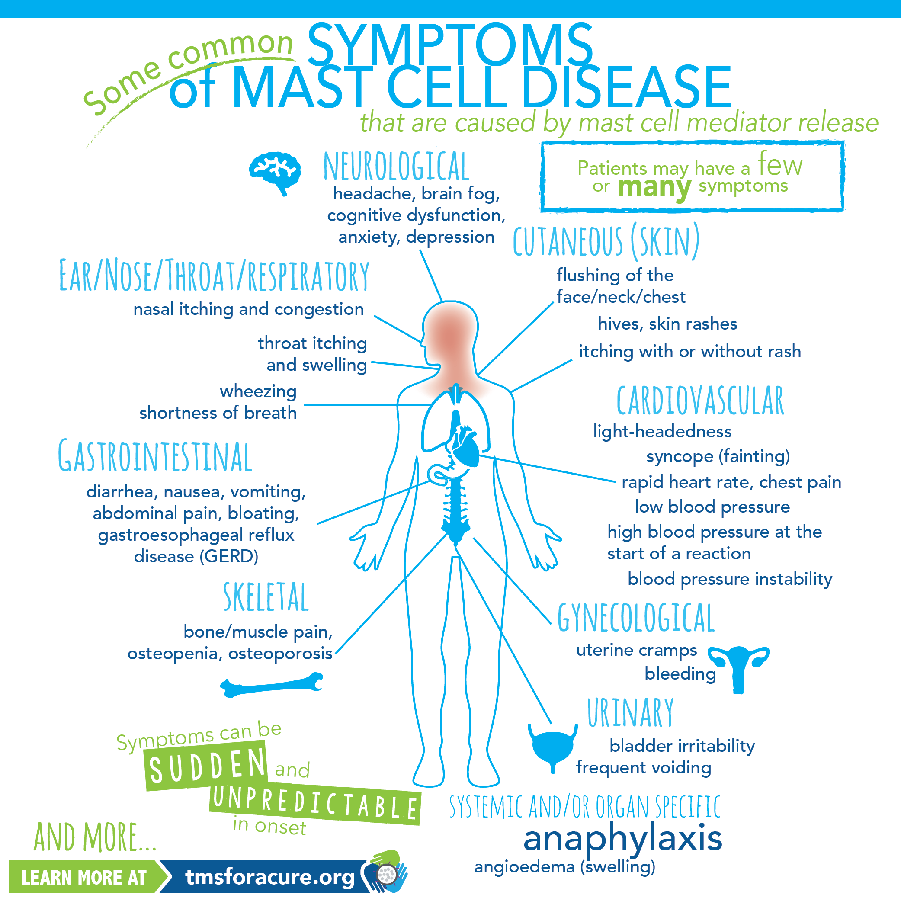

Mast cell diseases are rare; approximately 1 person out of 10,000 has one of the range of diseases, which means about 32,500 people in the US have a mast cell disease. I certainly had never heard of them before I was diagnosed with one, indolent systemic mastocytosis, in October of 2018. My disease is even more rare; I’m the first case that my hematologist has ever met, which makes sense as there are only about 11,000 of us in the US overall.
Everyone has mast cells. They are part of your immune system – made in the bone marrow, stationed everywhere in your body – and they announce emergency calls and send the rest of the immune system cells to fight infections and heal wounds. Mast cells are essential and amazing. On the bad side, they cause inflammation and are responsible for allergic responses: itchy skin, sneezing due to pollen, hives due to mosquito bites, anaphylaxis due to peanuts, etc. If you’ve ever popped Benadryl or Zyrtec, you’re trying to negate the effects of your mast cells and their abundant histamine release.
Folks with mast cell diseases have dysfunctional mast cells or, put another way, they have extraordinarily hyper-responsive mast cells. In this case, the mast cells put out emergency alerts for situations that are relatively benign – heat, cold, sunlight, food, beverages, medications, fatigue, plants, exercise, scents – as well as situations that are problematic, like stress, injury, pain, drugs, and insects. The dysfunctional mast cells don’t respond rationally either; they hit the panic button early and often, and sometimes folks with mast cell diseases go into anaphylaxis as a result. I have had reactions to surgeries, blood draws, exercise, alcohol, dairy, sugar, chocolate, and strong chemical smells (like cleaners and hand sanitizer) and I carry EpiPens with me everywhere I go because I cannot trust my mast cells to have reasonable responses to everyday living.
In addition to having hyper-responsive mast cells, folks with these diseases have too many mast cells, period. Our bone marrows keep making more (sometimes instead of making other immune system cells) and the dysfunctional mast cells live way longer than they should, so they build up in the body. If a person is really unlucky, then their dysfunctional mast cells pick a certain organ to concentrate on, which can ultimately lead to organ failure.
I cannot halt my disease progression – my body will continue making defective and over-reactive mast cells until I die – so my goal is to control the severity of my symptoms through medication, diet, stress management, and daily behavior changes. I experience the majority of the symptoms shown below, and I fear their severity increasing.
"Printable Resources" by The Mast Cell Society
If you’d like to learn more about mast cell diseases or specifically indolent systemic mastocytosis, I’m happy to talk with you and share what I know. Additionally, you could check out The Mast Cell Society website or, for even more in-depth reading, you could read through "The Mast Attack 107: The Lay Person's Guide to Understanding Mast Cell Diseases."